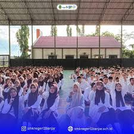
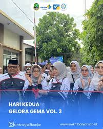

Membentuk Generasi Berkarakter, Unggul, dan Berwawasan Global
SMKN 1 Banjar adalah sekolah kejuruan yang berkomitmen mencetak lulusan yang kompeten, kreatif, dan siap bersaing di dunia kerja maupun melanjutkan pendidikan ke jenjang yang lebih tinggi. Dengan dukungan tenaga pengajar profesional dan fasilitas pembelajaran yang memadai, siswa dibekali keterampilan sesuai kebutuhan industri.
Fokus pada pengembangan software, website, dan aplikasi.
Mempelajari pencatatan keuangan, laporan, dan manajemen keuangan.
Fokus pada desain grafis, ilustrasi, dan multimedia kreatif.
Mempelajari produksi video, editing, dan dunia perfilman.
Belajar strategi bisnis, penjualan, dan digital marketing.
Fokus pada administrasi perkantoran dan pelayanan bisnis.
Mempelajari desain fashion, menjahit, dan industri busana.

